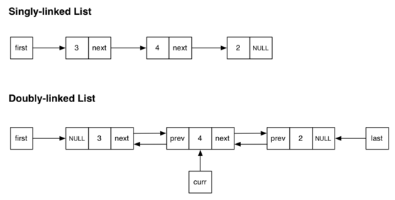
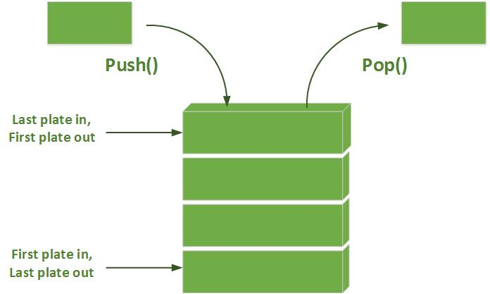

Learn About Data Structures
Common Data Structures
Linked Lists
The first structure we are going to talk about is known as the Linked List
A linked list one of the most common and important data structures in computer science. Before we get to the 'list' portion of the definition, we must first understand what a 'link' is.
A basic link, often called a node, is a special structure that contains two things.
- The actual data that is being stored, which may be of any type (string, number, boolean, etc...)
- A pointer (link), which holds the location in computer memory where the next node is in the list.
A collection of nodes creates the sequence which is termed a Linked List. A linked list is often compared to the very common array data type. They both can be used to store data, which can be inserted, removed and searched for.
There are a few different variations of the linked list. There are singly linked lists, which is the basic structure as described above. Doubly linked lists have an extra pointer on each node that points to the previous node. Circular lists work similarly but instead of the last node pointing to a null value, it points to the first node (first node previous pointer also points to last node).
Stack
The next data structure we are going to talk about is known as the Stack
A stack is a data abstraction such that the collection of items it stores maintains a specific order. That order follows the LIFO (Last In First Out) methodology. This means that only the last item added to the stack may be accessed for removal. To reach an element in the middle of a stack, you would have to repeatedly remove the top element until the element that is being searched for is now at the top of the stack.
The common way to think of the stack is to picture a stack of plates in a restuarant. This visually represents a way a stack operates. The stack can be implemented using a dynamic array, or by using the linked list.
Queue
The next data structure we are going to talk about is known as the Queue
A Queue is a data abstraction similar to a stack, however the order that elements are added, are the order that they can be removed. In other words, they have the FIFO (First In First Out) property.
The common way to think of the Queue is imagine waiting on line at a grocery store. The first customer on line is the first person who gets to checkout. The Queue can also be implemented using a dynamic array, or by using the linked list.